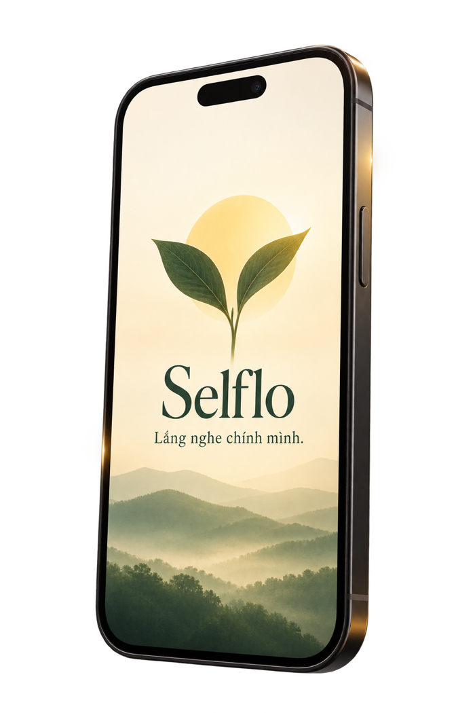
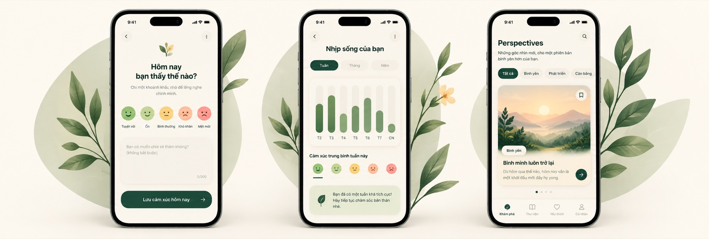

Không phán xét
Mọi cảm xúc đều có chỗ đứng. Bạn có thể chia sẻ thật lòng, không lo bị đánh giá.
 Selflo
App Store · Sắp ra mắt
Selflo
App Store · Sắp ra mắt
Một khoảng lặng dành cho bạn
Selflo giúp bạn ghi lại cảm xúc, nhìn lại nhịp sống và gặp một góc nhìn vừa đủ—không phán xét, không biến trải nghiệm thành một bảng điểm.

Selflo được tạo ra để làm gì?
Giữa những bộn bề, Selflo là một khoảng dừng nhẹ nhàng để bạn quay về với cảm xúc thật, nhìn lại nhịp sống, và thấy những góc nhìn mới cho hành trình của riêng mình.
Không cần trở thành phiên bản khác,
chỉ cần hiểu rõ phiên bản hiện tại của bạn.
Mọi cảm xúc đều có chỗ đứng. Bạn có thể chia sẻ thật lòng, không lo bị đánh giá.
Selflo không đo lường “tốt” hay “xấu”, mà giúp bạn nhìn thấy bức tranh cảm xúc một cách nhẹ nhàng.
Đây là không gian cá nhân của bạn, luôn an toàn và tôn trọng nhịp sống riêng của mỗi người.
Những trải nghiệm chính
Chỉ vài khoảnh khắc mỗi ngày,
để ghi lại, cảm nhận và nhìn mọi thứ rõ ràng hơn.

Riêng tư từ nền tảng
Không cần tài khoản.
Dữ liệu cốt lõi ở trên thiết bị.
Không quảng cáo và không theo dõi chéo.
Những bài viết mới nhất
SelfloLắng nghe chính mình.
 Nếu được sống một đời người
Nếu được sống một đời người Bình yên không đến từ việc mọi thứ hoàn hảo
Bình yên không đến từ việc mọi thứ hoàn hảo